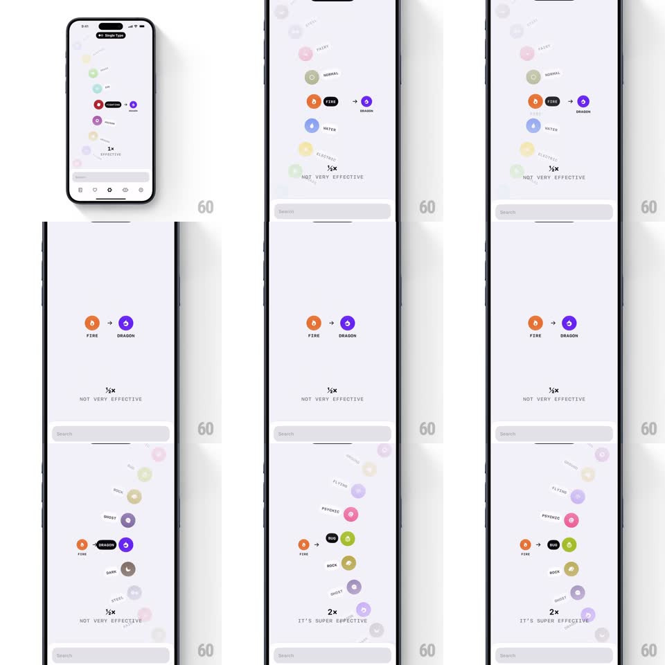

Media
Frame-by-frame

Rebuild this interaction 1:1: Ketchup's type-matchup wheel - a curved vertical wheel of type icons arcs down the screen; dragging rotates it so items scale up and sharpen at the selection point while others shrink and fade, and the matchup readout ("1/2x NOT VERY EFFECTIVE" / "2x IT'S SUPER EFFECTIVE") updates live.

Rebuild this interaction 1:1: Ketchup's type-matchup wheel - a curved vertical wheel of type icons arcs down the screen; dragging rotates it so items scale up and sharpen at the selection point while others shrink and fade, and the matchup readout ("1/2x NOT VERY EFFECTIVE" / "2x IT'S SUPER EFFECTIVE") updates live.
## Integration
Integration: stack-agnostic spec - springs given as stiffness/damping, timed motions as duration + curve; map every value to your framework and animation library of choice.
## Scene
Light screen: "AT: Gengar & Co?" chip top; center row shows attacker icon -> defender icon (FIRE -> DRAGON) with type labels; below, the multiplier ("1/2x") and verdict ("NOT VERY EFFECTIVE"). The wheel runs down the right arc: colored type icons (Fighting, Poison, Rock, Bug, Ghost, Steel, Fire, Water, Grass, Electric, Psychic...) at varying sizes/opacities.
## Motion spec
Pattern: curved wheel picker with depth falloff.
- Drag vertically: the wheel rotates along its arc (1:1 with drag, momentum on release); items move along the curve, not a straight line.
- Depth treatment by arc position: the item at the selection point is full size + full opacity + its label visible; items away from it shrink (down to ~50%) and fade (down to ~25%), labels hidden.
- Release: the wheel snaps the nearest item to the selection point (spring ~320/24, ~300ms) with a haptic tick per passed item.
- On selection change: the attacker icon pops (scale 0.85 -> 1, spring ~400/20) and re-tints; the multiplier and verdict crossfade (200ms); the matchup arrow row holds steady.
- Verdict emphasis scales with value: "IT'S SUPER EFFECTIVE" gets a slightly larger, brighter treatment.
## Calibration
- Arc curvature is constant; item size/opacity are pure functions of angular distance from the selection point.
- The matchup panel never moves - only its contents update.
## Reduced motion
Wheel scrolls flat (linear list); selection snaps without spring.
## Don't miss
- The wheel is only half-visible - it enters from the right edge and exits bottom, implying a full circle.
- Type icons keep their brand colors at every size; fade affects opacity, not hue.